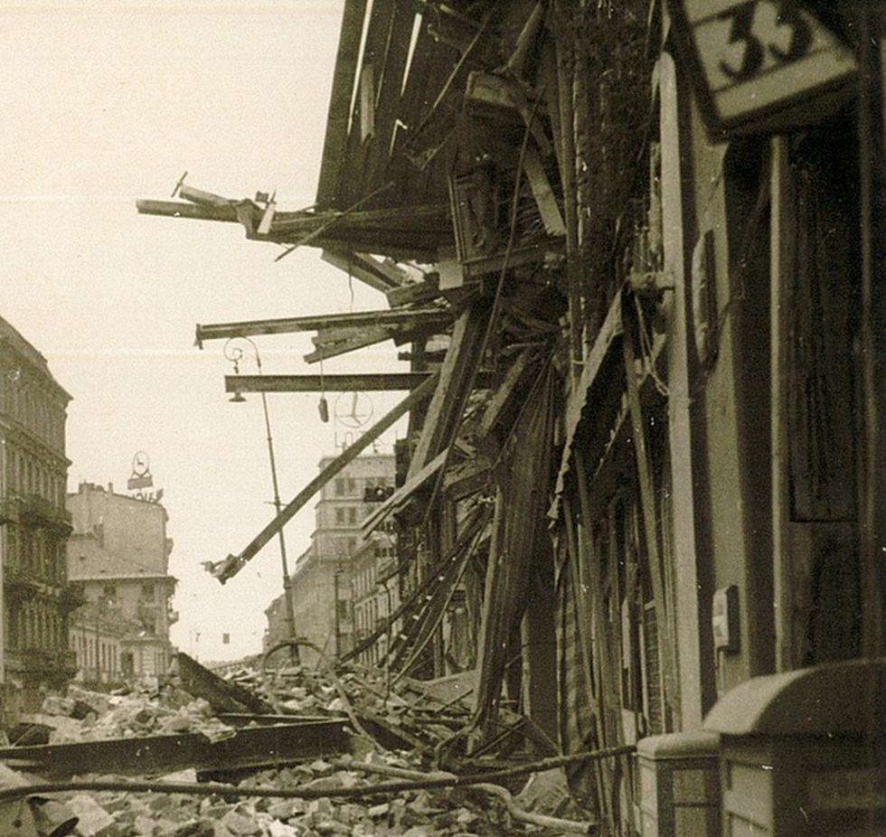

BOCHUM IM 2.WELTKRIEG
Am 2. Juni im Jahr 1942 wurde Bochum, genauer Dahlhausen,
von britischen Kampfflugzeuge in der Nacht attackiert.
Insgesamt wurden circa 2315 Bomben über Bochum abgeworfen.
Der grösste Teil dieser Bomben waren Stabbrandbomben. Es waren um die 2000 Bomben.
Bei diesem Angriff wurden erstaunlicherweise nur 21 Menschen verletzt.
Diesen Fakt konnte ich kaum glauben deshalb fragte ich Chatgbt nach dem Angriff auf Dahlheim,
doch es konnte mir nur Informationen über die Opfer von allen Bombenangriffe auf Bochum nennen.
Aber die Folgen dieses Bombenangriff auf Dahlheim waren Obdachlosigkeit und Hungernot in ganz Bochum.
Dieser Bombenangriff war aber nur die Eröffnung für die danach regelmässig ausgeführten Bombenangriffe
auf ganz Bochum. Die Angst der Bevölkerung stieg mit jedem weiteren Angriff. Augenzeugen berichten,
dass in ganz Bochum Ruinen lagen und auf den Strassen überall verbrannte Körper lagen.
Das Ruhrgebiet galt als Waffenschmiede, weshalb es oft bombardiert wurde. Denn Bochum liegt
in der Mitte des Ruhrgebiets.
